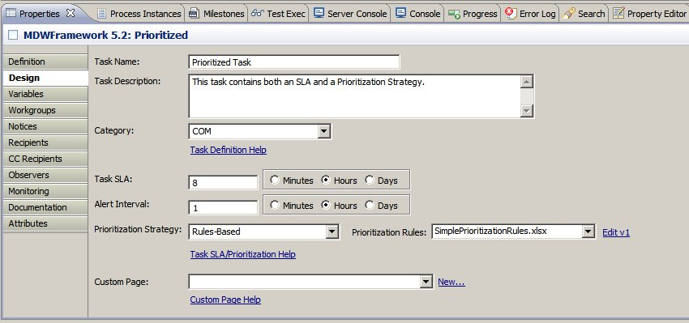
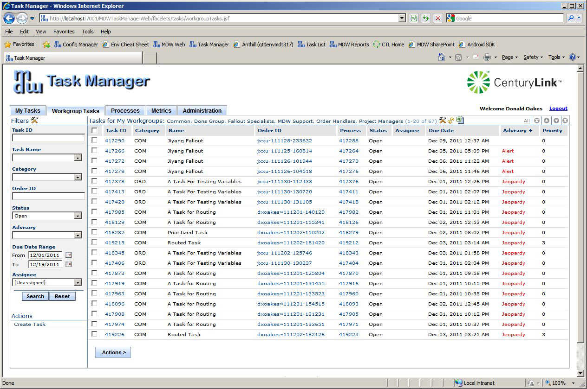

Task SLAs and Prioritization
Due Dates and Alerts
Most manual tasks within MDW should have an SLA configured to signify the maximum expected duration for the task.
This helps to track which tasks are taking longer to complete than expected.
You define the SLA for a task using the Design tab of a Manual Task Activity (see screenshot below).
SLAs are specified in Minutes, Hours or Days.
The time intervals for both SLAs and Alerts are measured in actual duration rather than in business hours (e.g. an interval of 24 hours means the deadline will pass tomorrow).
Both SLAs and alerts affect the State of a task instance (as opposed to its Status, which is independent).
When a task instance is created at runtime, a Due Date is established and the clock starts ticking.
By default, the Due Date is calculated based on the defined SLA (but this calculation can be customized -- see Prioritization).
This means if the SLA value is 8 hours, the Due Date will pass 8 hours after the task is first created.
When a Due Date for a task instance passes, the State of the task instance is set to Jeopardy.
The Alert state offers an opportunity for users to receive advance warning when a deadline for task completion is approaching.
When a task instance's Due Date has approached within the configured Alert Interval, the State of the task instance is set to Alert.
In the example above, where the SLA is 8 hours, if the Alert Interval were 1 hour then the task instance State would change to Alert after 7 hours.
During the lifecycle of a task instance, both Jeopardy and Alert state transitions can trigger e-mail or desktop Notifications.

In the MDW Task Manager webapp, users can filter and sort on the Advisory column, which reflects the Alert or Jeopardy state of a manual task.
Users can also filter and sort by Due Date.

Note: if a task definition does not include an SLA or Due Date specification, no Due Date will be inserted for its instances,
and the Due Date Range criteria must be cleared in order to display them. In this case it's recommended to utilize the MDWHub Configuration feature to either populate the Due Date Range with empty values or remove this criteria field altogether.
Prioritization
As depicted in the above screenshot, users can use Due Date and Advisory to help manage and prioritize task instances.
Another mechanism that MDW provides is Task Prioritization, which can be used by itself or in conjunction with Due Dates.
Task priorities can take on any integer value, with the convention being that lower numbers represent higher priorities (except that zero means no priority is defined).
The priority value is assigned according to a customizable Prioritization Strategy.
Strategies are provided in the form of Java classes that implement the PrioritizationStrategy interface.
Two prioritization strategy implementations are provided out-of-the-box with MDW:
- Specified:
Priority is pre-wired according to a value specified with the task definition.
- Rules-Based:
Determines priority based on a configured rules definition Workflow Asset (either a Drools DRL document or an Excel decision table).
To select a prioritization strategy, use the dropdown on the Manual Task activity Design tab (see screenshot above).
For a completely custom strategy, simply type your fully-qualified implementor class name in the Prioritization Strategy combo box.
However, a high degree of customization can be achieved through the prebuilt rules-based strategy. An example of this is provided with the SimplePrioritizationRules.xlsx spreadsheet in the MDW Baseline package.
Prioritization strategies can be used to customize both task Priority and task Due Date. The PrioritizationStrategy interfaces specifies two methods for this purpose (determineDueDate() and determinePriority()).
The due date calculation is performed first, and its value is passed to the priority calculation so that it can be used as an input if desired. Task template attributes and indexed process variable values are also available as inputs to both calculations (through the getParameters() method).
It should be noted that the same strategy implementor instance is used for both calculations, so instance-level variables can be stored and accessed between the two.
Notices
Task Notices and (less commonly) Task Observers can be configured so that they are triggered when a task enters Jeopardy or Alert State.
Regardless of whether notices or observers are configured, the Alert and Jeopardy state of manual tasks are displayed in red highlighted text in Task Manager as illustrated in the screen shot below.